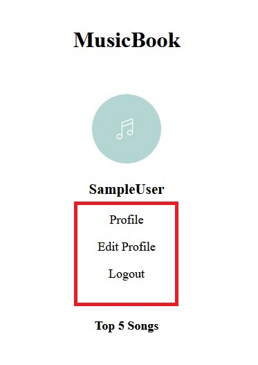
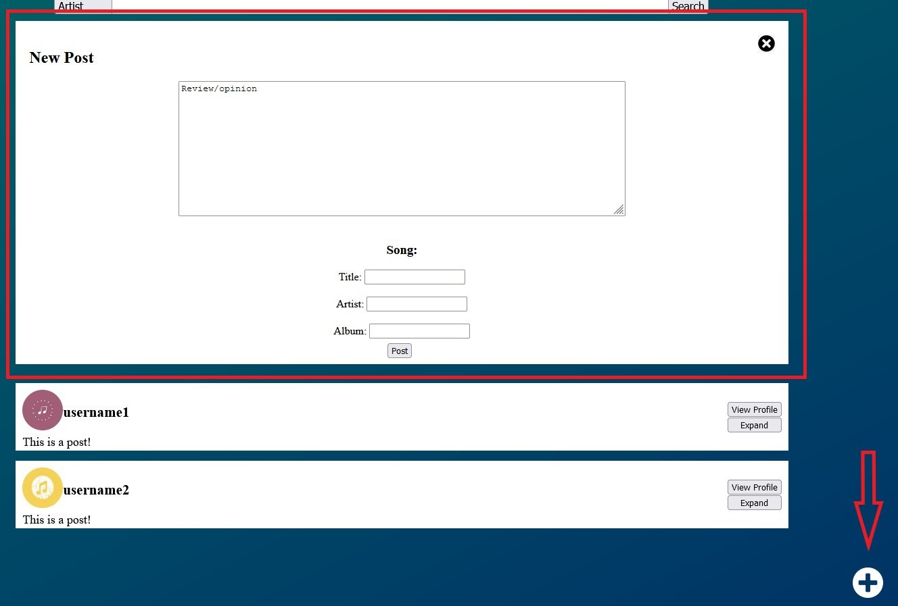

Help Page
This page will help you in creating an account, logging in, and navigate the website and learn all the feature.
How to Create an Account
To create an account, type in a username that you would like to have (if it is available) and
a password. Once satisfied, click on the button "Create". You created an account! You will
be directed to the main feed. Note that a profile picture will be chosen for you at random.
If you already have an account, type in your username and password associated with the site and click
on the button "Login".
If you ever need to get back to this page on the login page, the question mark (?) in the upper-right
will take you back here.

How to Use the Navigation Panel
Once you are logged in, the navigation panel on the left of the screen with your profile picture can take you to your profile, which will list all your posts; edit your profile, such as changing your username or password; or simply logout. Logging out will take you back to the login page.
The box to the left over the user posts displays when you click on Edit Profile in the navigation panel.
Your Top 5 Songs
The navigation panel also lists your top 5 songs that you have posted.
Find the Help Page
To get back to this page on the main site, click on the help icon ( aka the question mark (?) ) located at the bottom left corner of the navigation panel.
Seeing Posts from Yourself and Other Users
Next to the navigation panel is the feed view where there is a list of posts from other users. The posts will have the option to view the user's profile, which would list their posts, or expand the post as seen in the picture.
Using the Search Bar and the Results
You can search for songs, albums, artists, and users with the search feature. Simply use the dropdown menu to choose which you would like to search for, then type the name of the artist, album, or song you are looking for.
If search results are found, the posts about your search will be listed as the picture above--very similar to how your home feed looks. Otherwise, a statement saying, "No results found" will be displayed. To go back to the main feed, simply click on the website's title MusicBook.
How to Create a Post
To create a new post of your own, the create a new post icon is located on the bottom-right of the page, which is a plus sign in a circle. This will prompt textboxes for you to fill in order to create your own post. If you decide you do not want to create a post you can click on the x in the black circle on the upper-right of the new post box.
You will also have the option to delete your own post.